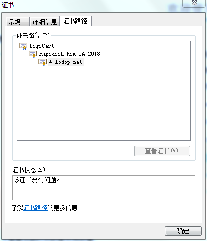
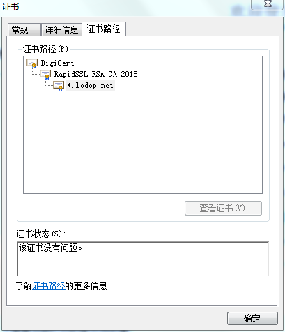

https证书路径
https://localhost.lodop.net:8443提示不安全
查看下证书路径是否正常：

百度在浏览器查看证书的方法试试。
在提示不安全的页面的浏览器地址栏或页面里，也可以查看到报错的证书信息。
安装根证书
安装图中的这个两个根证书试试:
百度下这两个证书，在网上搜一下安装下根证书试试。
安装下根证书试试
https://www.digicert.com/kb/digicert-root-certificates.htm
查看下证书路径是否正常：

百度在浏览器查看证书的方法试试。
在提示不安全的页面的浏览器地址栏或页面里，也可以查看到报错的证书信息。
安装根证书
安装图中的这个两个根证书试试:
百度下这两个证书，在网上搜一下安装下根证书试试。
安装下根证书试试
https://www.digicert.com/kb/digicert-root-certificates.htm